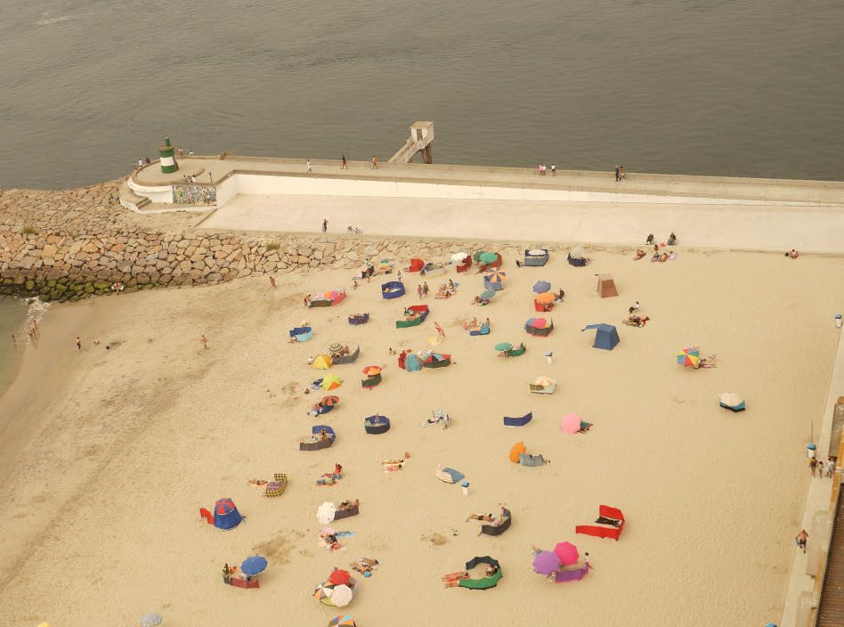
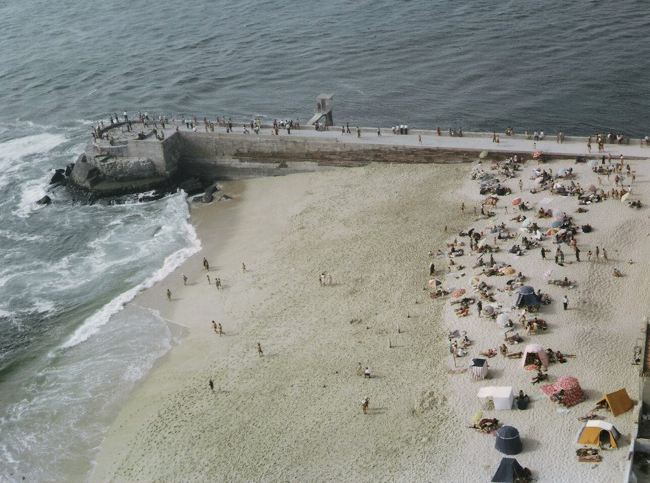

1974&2014 Praia da Barra Vista do Farol da Barra. A ponte da Barra pode ser vista a ser construída. Partilhar   Eng.º Adelino Lopes
1974&2014 Praia da Barra Vista do Farol da Barra. A ponte da Barra pode ser vista a ser construída. Partilhar Eng.º Adelino Lopes
1974&2014 Praia da Barra Vista do Farol da Barra. A ponte da Barra pode ser vista a ser construída. Partilhar Eng.º Adelino Lopes